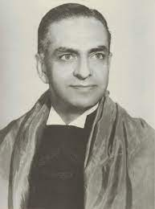

História do Advogado Trabalhista
Origem
 A origem e a trajetória da advocacia trabalhista, que surgiu com a criação da Justiça do Trabalho, fazem
parte da história da própria advocacia no Brasil, da qual se esgalhou. Daí a necessidade de um abordagem
das raízes dessa nova advcacia especializada que nos permitimos introdutoriamente fazer.
Ao tempo do Império, mesmo depois da criação das Faculdades de Olinda e São Paulo, como sabido, os
filhos de famílias ricas eram enviados à Europa, notadamente a Portugal, onde se bacharelavam em
Direito.
Formavam, no Brasil, a elite intelectual, social e política que empalmava os Poderes Executivo,
Legislativo e
Judiciário.
A origem e a trajetória da advocacia trabalhista, que surgiu com a criação da Justiça do Trabalho, fazem
parte da história da própria advocacia no Brasil, da qual se esgalhou. Daí a necessidade de um abordagem
das raízes dessa nova advcacia especializada que nos permitimos introdutoriamente fazer.
Ao tempo do Império, mesmo depois da criação das Faculdades de Olinda e São Paulo, como sabido, os
filhos de famílias ricas eram enviados à Europa, notadamente a Portugal, onde se bacharelavam em
Direito.
Formavam, no Brasil, a elite intelectual, social e política que empalmava os Poderes Executivo,
Legislativo e
Judiciário.
Toda a comunidade jurídica reunia-se então em torno do Instituto dos Advogados Brasileiros, a única
associação juridica de âmbito nacional da época, fundado para organizar a Ordem dos Advogados, e a ele o
Imperador não raro comparecia e frequentemente recorria em busca de pareceres sobre matéria jurídica de
interesse do Governo. Nesse periodo, o diploma de bacharel, por si só, conferia prestígio e status a seu
titular. O bacharel e o advogado faziam-se notar pelo uso de um vistoso anel de grau, encastoado com uma
pedra preciosa de cor vermelha. Nos dias úteis portava uma indefectivel pasta de couro, ainda hoje
utilizada
por muitos profissionais.
Até a década de 30, os advogados eram, no sentido estrito, típicos profissionais liberais, cujo vínculo
com o cliente limitava-se ao exercicio do mandato remunerado, embora fosse comum no desempenho do
procuratório, firmarem laços de amizade com o constituinte. Aqueles – e eram muito poucos – que recebiam
paga mensal
fixa,
procuravam ocultar essa modalidade de estipêndio por se tratar de uma prática desusada, atípica, tida
como
inconciliável com o caráter rigorosamente liberal da profissão. Não se concebia, por vexatória, a
figura, ao
tempo desconhecida, do profissional assalariado, do advogado de partido.
O advogado ganhava por causa patrocinada.A contratação mediante retribuição fixa mensal teve como ponto
de
partida, na área trabalhista, a legislação oriunda da Revolução de 1930 e começou a ganhar corpo na
década
de 40, em decorrência da instalação da Justiça do Trabalho, do desenvolvimento econômico e social do
país,
da criação e expansão de entidades sindicais, que passaram a constituir seu corpo jurídico, quando a OAB
já
havia se estruturado. No Rio de Janeiro, a Light, o Banco do Brasil, outras grandes empresas, Sindicatos
e
Instituições Financeiras foram os primeiros a admitir advogados-empregados. A regulamentação definitiva
dessa nova categoria de profissionais, entretanto, só veio a ser implementada em 1994, com o advento do
Estatuto da Advocacia.
Pioneiros

"A advocacia trabalhista teve seus pioneiros no Rio de Janeiro, então Distrito Federal, onde se
destacaram profissionais como Mário Borghini, Alino da Costa Monteiro, Nélio Reis, Antônio Padua Brito,
Hirosê Pimpão, Afonso Agapito da Veiga, Alfredo Thomé Torres, Omar Dutra, Haroldo Hagnaga, Júlio Belmiro
Araújo, Serverino Bandeira Cavalcanti, Jayme Daguer Muniz de Aragão, Raul Pimenta, Newton Marques dos
Reis, Alcebiades Delamare, Antônio Padua Brito e Orozimbo de Almeida Rego. Esses advogados foram
verdadeiros desbravadores da advocacia trabalhista, contribuindo para o desenvolvimento da área no Rio
de Janeiro.
Um dos pioneiros, Mário Borghini, transformou seu escritório em um celeiro de excelentes profissionais e
futuros magistrados. Os jovens advogados que faziam parte de sua equipe recebiam uma formação
profissional sólida, uma vez que na época não existia formalmente o estágio profissional.
Outros profissionais, como Cotrim Neto, Nélio Reis e Hirosê Pimpão, foram também dos primeiros advogados
trabalhistas a se tornarem autores de obras sobre Direito do Trabalho, contribuindo para a escassa
literatura trabalhista do Brasil naquele período. Em São Paulo, destacaram-se pioneiros como Rio Branco Paranhos, Nelio Batendieri e Cesarino Junior,
autor da primeira CLT comentada, publicada em 1948. Na Bahia, nomes como Orlando Gomes e José Martins Catharino foram referências na advocacia trabalhista.
No Rio Grande do Sul, destacaram-se Afrânio Araújo, Osmar Martins, Edgard Serra, Eli Raskini e outros.
Em Minas Gerais, José Cabral, Celio Goyatá, Herzik Muzzi e Rodolfo Bhering foram importantes nomes na
área. No Espírito Santo, Deusdedit Baptista e Eugênio Sette contribuíram para o desenvolvimento da
advocacia trabalhista. No Paraná, José de Assumpção Malhadas, João Regis Fresbender e Edésio Passos são exemplos de
profissionais atuantes na área.
É interessante notar que a presença feminina na advocacia trabalhista era rara, mas hoje mais de 40% dos
advogados que atuam na Justiça do Trabalho do Rio de Janeiro e de São Paulo são mulheres, seguindo a
tendência de feminização da magistratura. Esses pioneiros da advocacia trabalhista enfrentaram desafios e contribuíram para a construção e
consolidação dessa área do Direito no Brasil. Suas trajetórias e contribuições são fundamentais para
compreendermos a importância e o desenvolvimento da advocacia trabalhista no país."